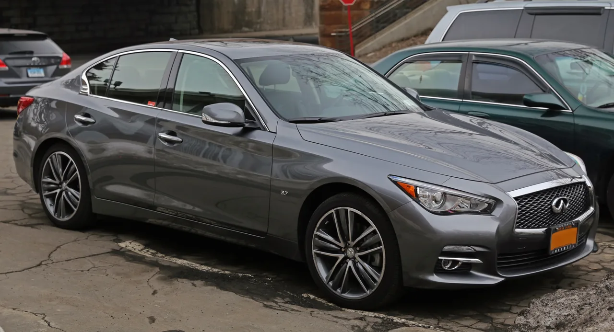
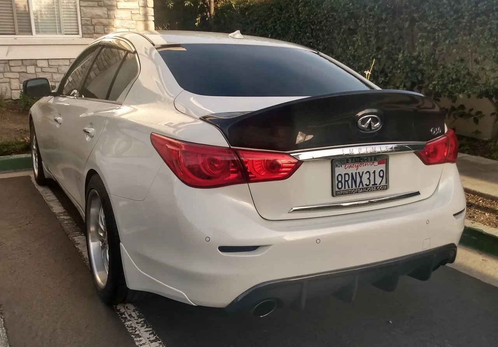
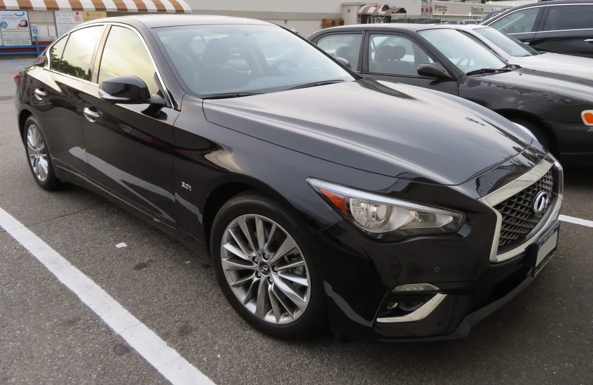

▲ 인피니티 Q50. 328마력 자연흡기 V6를 얹은 2014~2015년형 모델이 중고 시장에서 놀라운 저평가를 받고 있다
미국 시장 기준, 잘 관리된 인피니티 Q50 V6의 중고 가격이 기아의 보급형 세단 K4 신차 시작가(2만2,290달러)보다도 낮게 형성되고 있습니다. 상태가 가장 좋은 최상위 매물조차 2만 달러 선을 넘지 않는 수준입니다. 328마력을 내는 자연흡기 V6 스포츠 세단이 이 가격이라는 것은, 감가율만 놓고 보면 이례적인 수준입니다.
1. VQ37VHR — 닛산이 만든 최고의 엔진 중 하나
Q50 V6의 핵심은 VQ37VHR 3.7리터 자연흡기 V6 엔진입니다. 328마력, 269lb-ft의 토크를 내며 정지 상태에서 시속 60마일까지 약 5.3초에 도달합니다. 터보차저 없이 순수 배기량과 회전질감으로 힘을 내는 자연흡기 V6는, 요즘처럼 다운사이징 터보 엔진이 대세인 시장에서는 오히려 희소가치가 있는 구성입니다. 이 엔진은 닛산의 현대 엔진 중 가장 내구성이 뛰어난 엔진 중 하나로 평가받고 있으며, 실제로 Q50과 관련해 보고되는 고질적 문제들 대부분은 엔진 자체보다는 전장·편의 장비 쪽에 몰려 있습니다.

▲ 인피니티 Q50 3.7. 펜더에 새겨진 '3.7' 배지가 자연흡기 V6 엔진 탑재를 알려준다
2. 왜 이렇게 쌀까 — 감가율의 함정
Q50은 신차 기준 5년이 지나면 약 55%가 감가되는 것으로 나타났습니다. 3년 시점 감가율이 43.7%, 7년 시점 65.8%, 10년 시점에는 73.5%까지 떨어집니다. 벤츠나 BMW 같은 독일 경쟁 브랜드에 비해 감가폭이 훨씬 큰 편인데, 이는 인피니티라는 브랜드 인지도가 지난 10년간 상대적으로 약화된 데다, 경쟁 모델 대비 상품성 개선 주기가 더뎠고, 실내 인포테인먼트 기술도 생산 종료 시점까지 다소 노후화된 채 남아있었기 때문으로 분석됩니다. 다시 말해, 차량 자체의 결함이 아니라 브랜드 포지셔닝과 상품성 정체가 감가율을 끌어올린 주된 원인이라는 뜻입니다.
| 구분 | 수치 |
|---|---|
| 3년 감가율 | 43.7% |
| 5년 감가율 | 약 55% |
| 7년 감가율 | 65.8% |
| 10년 감가율 | 73.5% |
| 중고가 범위 | 약 6,000~2만 달러 |

▲ Q50 후면. 카본 소재 트렁크 스포일러와 세로형 테일램프가 스포츠 세단다운 인상을 준다
3. 어떤 연식을 골라야 하나
2014년형은 Q50이 처음 출시된 첫 해로, 세대 전체를 통틀어 상대적으로 결함 보고가 가장 많은 연식으로 꼽힙니다. 반면 2015년형은 초기 결함이 어느 정도 개선되며 내구성 평가에서 소폭 더 나은 점수를 받았습니다. 가격대별로 보면 주행거리가 많은 매물은 약 6,000달러 선부터, 10만 마일 이하의 관리 상태가 양호한 매물은 1만~1만6,000달러 선, 거의 새 차에 가까운 저주행 매물은 2만 달러 선까지 형성돼 있습니다. 예산과 주행거리 허용치에 따라 선택 폭이 넓은 편입니다.

▲ Q50 라인업 전면. 세대를 거치며 다듬어진 인피니티 특유의 이중 아치형 그릴이 특징이다
4. 정리 — 감가율이 만든 기회
브랜드 프리미엄이 약해지면서 만들어진 가혹한 감가율은, 역설적으로 실사용 구매자에게는 좋은 기회가 됩니다. 328마력 자연흡기 V6, 검증된 엔진 내구성, 그리고 기아 신차 한 대 값도 안 되는 가격표. Q50 V6는 스포츠 세단을 합리적인 가격에 즐기고 싶은 소비자에게 진지하게 고려해볼 만한 선택지입니다. 다만 인피니티 특유의 전장·편의 장비 관련 이슈는 구매 전 정비 이력과 함께 꼼꼼히 점검하는 것이 좋습니다.